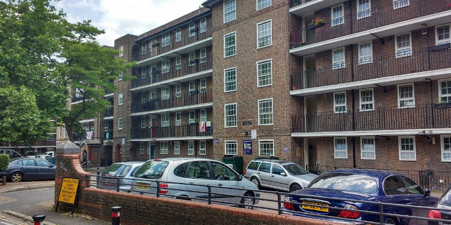

Introduction
The Crossfield Estate, built in the 1930s, consists of a total of nine apartment blocks separated by Deptford Church Street and the railway viaduct into three separate entities. Consistency in height, style, architectural detailing and building materials distinguish the estate as a single-phase development. It is a good example of its time that illustrates the underlying design principles of the 1930s LCC social housing types.
When Lewisham Council changed its housing policy for the estate in the late 1970s – giving priority to young single professionals – it gave the impetus to the development of a radical arts and music scene that gained Deptford an almost legendary status in the 1970s and 80s.
Please post your story or questions to crossfieldsestate@deptfordcreek.net